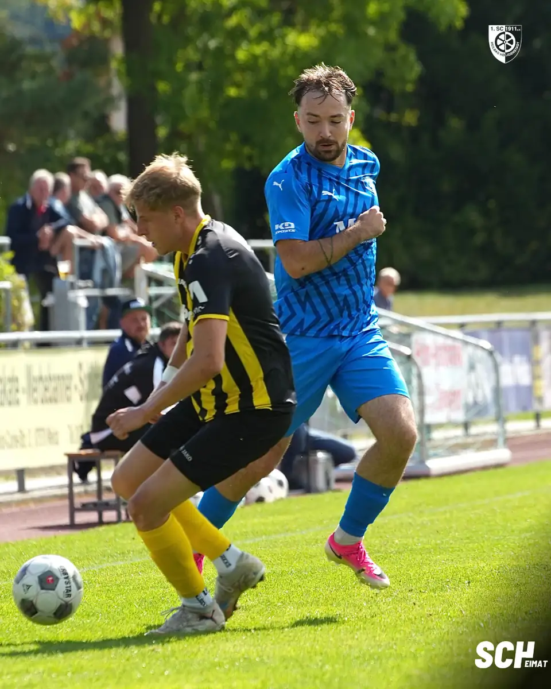
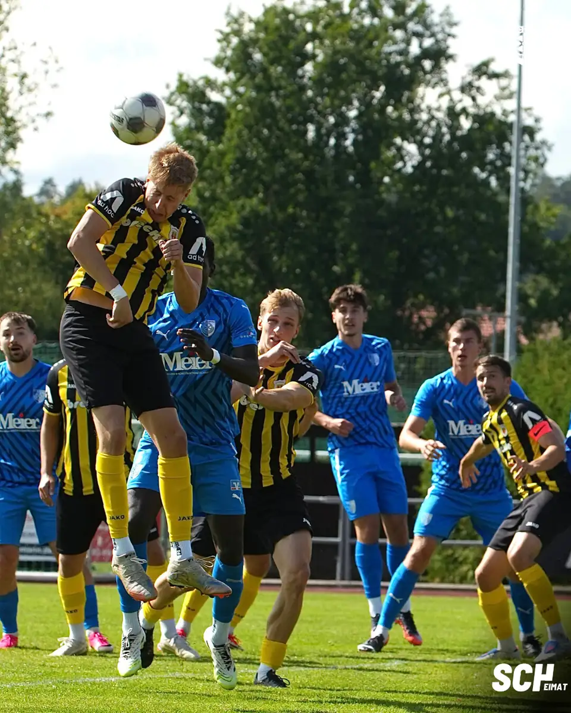
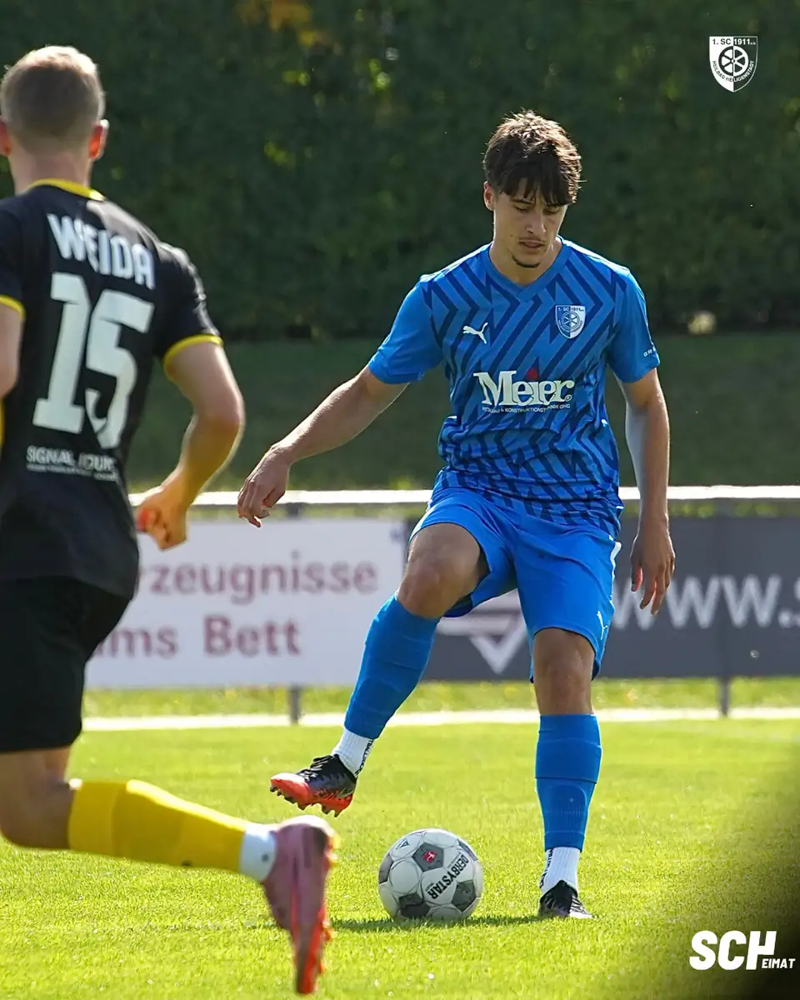
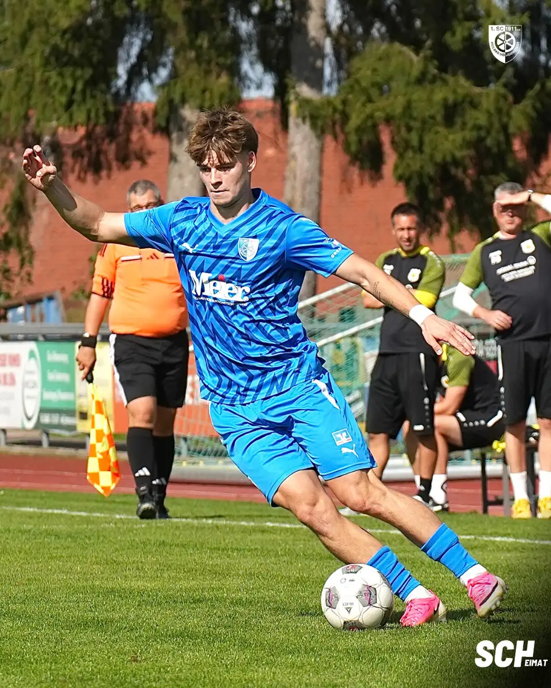
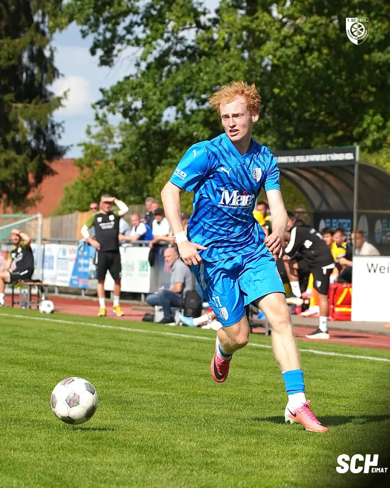
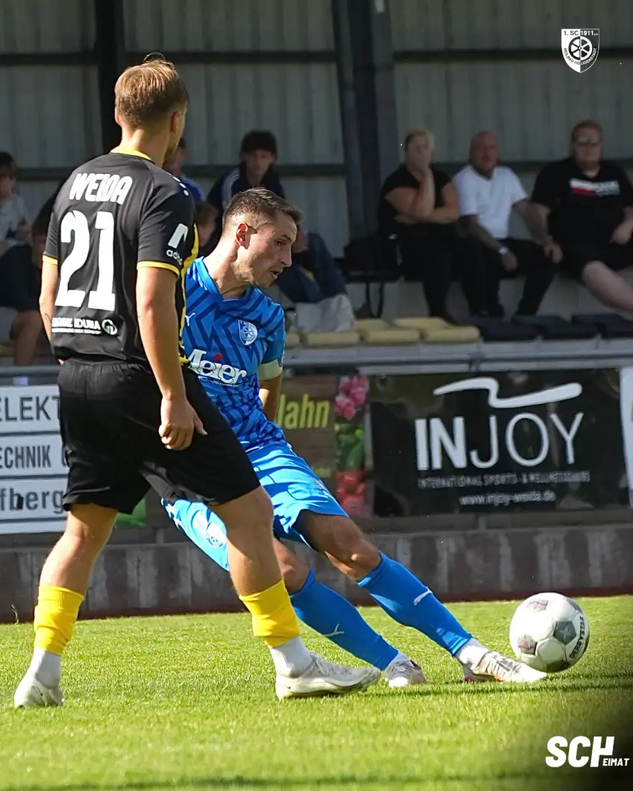
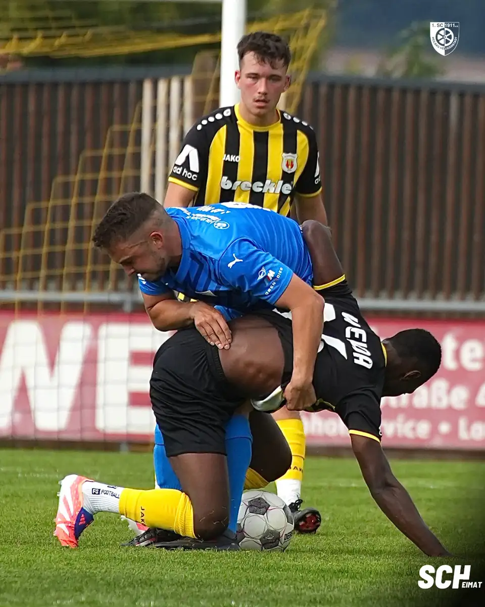

Viel Ballbesitz, zu wenig Ertrag: SCH verliert auf dem Roten Hügel
Der SCH kehrt ohne Punkte aus dem Thüringer Vogtland zurück. Beim FC Thüringen Weida unterlag die Ludwig-Elf am fünften Spieltag der Verbandsliga mit 1:3 (0:2). Über weite Strecken hatten die Blau-Weißen mehr Ballbesitz, fanden gegen die kompakte Weidaer Defensive aber zu selten den Weg in die gefährlichen Räume. Die Gastgeber machten es anders: tief stehen, nach Ballgewinnen schnell umschalten und die sich bietenden Möglichkeiten konsequent nutzen. Genau damit entschied Weida diesen Nachmittag für sich.
Früher Rückschlag nach zwei Minuten
Viel schlechter hätte die Partie für den SCH kaum starten können. Gerade einmal zwei Minuten waren auf dem Roten Hügel gespielt, da lag der Ball bereits im Tor der Blau-Weißen. Leon Gentsch brachte Weida früh mit 1:0 in Führung.
Ein Treffer, der den Gastgebern genau in die Karten spielte. Weida konnte sich noch stärker auf die eigene Defensive konzentrieren, die Räume eng machen und auf die schnellen Gegenstöße setzen, die schon in den ersten Saisonwochen zu einer Stärke der Ostthüringer geworden waren. Gentsch hatte seine Qualitäten dabei erst wenige Tage zuvor im Thüringenpokal gezeigt und beim 6:3-Erfolg gegen Wismut Gera zweimal getroffen. Der SCH musste dagegen praktisch mit dem ersten Angriff einem Rückstand hinterherlaufen. Am grundsätzlichen Bild änderte das wenig. Die Ludwig-Elf hatte deutlich mehr vom Ball und versuchte, das Spiel aufzubauen. Weida überließ den Blau-Weißen diese Spielanteile bewusst. Entscheidend war, was nach Ballverlusten passierte. Dann wurde es schnell.
Weida braucht nur wenige Aktionen
Genau auf diesem Weg fiel auch der zweite Treffer. Die Gastgeber verteidigten kompakt und suchten nach Ballgewinnen ohne große Umwege den Weg nach vorn. Der SCH hatte den Ball, Weida die gefährlicheren Momente. In der 19. Minute erhöhte Oliver Peuker auf 2:0. Für die Blau-Weißen war es der zweite empfindliche Treffer innerhalb der ersten 20 Minuten. Wieder hatte Weida aus vergleichsweise wenig Ballbesitz maximalen Ertrag gezogen. Das stellte die Ludwig-Elf vor eine schwierige Aufgabe. Zwei Tore Rückstand gegen einen Gegner, der nun noch weniger Grund hatte, seine defensive Ordnung aufzugeben. Der SCH musste das Spiel machen, gleichzeitig aber darauf achten, den Gastgebern nicht noch mehr Räume für ihr schnelles Umschaltspiel anzubieten. Bis zur Pause blieb es beim 2:0. Ein Zwischenstand, der die Partie ziemlich treffend zusammenfasste. Der SCH hatte viel Ballbesitz, Weida die Tore. Fußball kann manchmal so einfach und gleichzeitig so bitter sein.
Ballbesitz allein reicht nicht
Auch nach dem Seitenwechsel blieb die Ausgangslage unverändert. Die Blau-Weißen mussten Lösungen gegen eine Mannschaft finden, die mit ihrer Führung im Rücken genau das spielen konnte, was sie an diesem Nachmittag spielen wollte. Der SCH bewegte den Ball, suchte den Weg nach vorn und versuchte, Weidas Defensive auseinanderzuziehen. Doch die Gastgeber hielten ihre Ordnung. Sobald sich nach einem Ballgewinn Platz bot, wurde schnell umgeschaltet. Was unserer Mannschaft fehlte, war die letzte Konsequenz. Mehr Spielanteile helfen wenig, wenn daraus zu selten klare Abschlüsse entstehen. Gleichzeitig musste der SCH mit zunehmender Spielzeit mehr riskieren. Dadurch wurden die Räume für Weida zwangsläufig größer. In der 59. Minute folgte der nächste Rückschlag. Maurice Fromm-Kruschel traf zum 3:0. Der Mittelfeldspieler gehörte im Sommer zu den Neuzugängen des FC und hatte bereits vor dieser Partie zweimal in der Verbandsliga getroffen. Nach knapp einer Stunde schien die Partie damit entschieden.
Wolanski verkürzt – der SCH gibt sich nicht geschlagen
Trotz des deutlichen Rückstands stellte die Ludwig-Elf das Fußballspielen nicht ein. Sieben Minuten nach dem dritten Gegentor gab es zumindest die verdiente Belohnung für den Aufwand. Maciej Wolanski traf in der 66. Minute zum 1:3. Der Anschlusstreffer änderte zwar nichts mehr am Ausgang der Partie, war aber die Antwort einer Mannschaft, die sich auch nach dem 0:3 nicht hängen ließ. Der SCH versuchte weiter, nach vorn zu spielen. Weida konnte sich dagegen noch stärker auf die Absicherung konzentrieren und den Vorsprung verwalten. Ein zweites Tor, das die Schlussphase noch einmal richtig geöffnet hätte, gelang den Blau-Weißen nicht mehr. So blieb es nach 90 Minuten beim 3:1 für die Gastgeber. 150 Zuschauer sahen auf dem Roten Hügel einen Erfolg der Mannschaft, die an diesem Nachmittag weniger Ballbesitz benötigte, um mehr daraus zu machen.
„Uns hat heute die gewisse Härte gefehlt“
Alexander Ludwig fand nach dem Abpfiff klare Worte für den Auftritt seiner Mannschaft.
„Uns hat heute die gewisse Härte gefehlt. Diese müssen wir jetzt wieder an den Tag legen.“
Es ist ein Satz, der zu diesem Spiel passt. Der SCH hatte über weite Strecken den Ball, doch Weida war in den entscheidenden Situationen konsequenter. Die Gastgeber verteidigten ihren Vorsprung, schalteten schnell um und nutzten die Räume. Unsere Mannschaft investierte viel in den eigenen Spielaufbau, konnte daraus aber zu wenig Kapital schlagen. Dass Weida genau diese offensive Qualität besitzt, war vor der Partie bekannt. Nach vier Spieltagen standen die Ostthüringer mit zwölf Punkten und 16:6 Toren auf Rang zwei. Der SCH war mit sieben Punkten angereist. Auf dem Roten Hügel zeigte sich dann vor allem, wie konsequent die Gastgeber ihre Möglichkeiten nutzen können.
Für die Ludwig-Elf geht es nun darum, die richtigen Schlüsse aus diesen 90 Minuten zu ziehen. Die Spielanteile waren da. Der Ertrag fehlte.
Spieldaten
FC Thüringen Weida – 1. SC 1911 Heiligenstadt 3:1 (2:0)
FC Thüringen Weida
Soldera – Paulick – Wollnitzke – Peuker (86. Bergner) – Fromm/Kruschel – Gentsch (76. Darboe) – Fuchs (58. Sevcuks)- Schöneich – Schädel (74. Kuhn) – Zerrenner (79. Dörlitz) – Otto
SC Heiligenstadt
Stankovic – Wolanski – Abdoul Aziz – Jeschke (69. Köhler) – Göbel – Hoch – Wilhelm (82. Jargees Ali) – Michalek (59. Lerch) – Schnellhardt – Voilenko (46. Aschoff) – Fiedler (67. Opfermann)
Schiedsrichter
Lorenzen
Zuschauer
150
Tore
1:0 Gentsch (2.), 2:0 Peuker (19.), 3:0 Fromm/Kruschel (59.), 3:1 Wolanski (66.)






